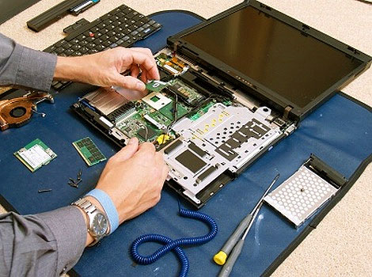
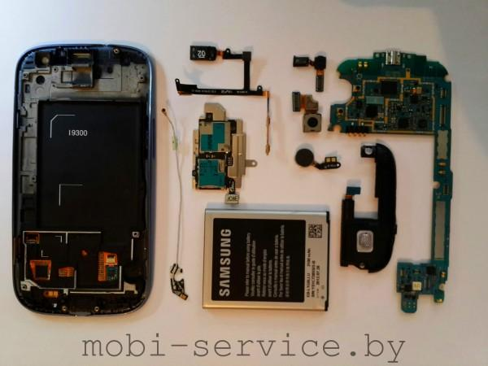

Laptopok szereréséről

Először fel kell készítenie egy kicsit, hogy tovább manipulálja a technikát. Ha ezt először csinálod, akkor nem lesz felesleges, hogy néhány csészét a csavarokhoz és egy papírlapot, amelyen egy sorozatot szeretne írni. Ez megmenti Önt a laptopok szerelvényével. Érdemes lesz a legközelebbi áruházba, vagy megrendelni egy termikus chaser az interneten, hogy cserélje ki a hűtőrendszer és a szilikon kenőanyag a hűtőhöz.Az első dolog, amit a laptop szétszedése előtt meg kell tennie, hogy kikapcsolja az eszközt, és távolítsa el az akkumulátort. Egy kicsit később két kereszteződésre van szükséged és egy lapos csavarhúzóval. Vessen egy pillantást a szerszámok nyílására. Nem lehet megsérülni és tökéletesen megközelíteni a technikájában lévő csavarok alatt. Az általános tisztítás után a műhelyben, és miután megtalálhatja a szükséges eszközöket, elkezdheti manipulációkat egy laptoptal. A szó szerint minden egyes gyártónak ugyanazok a párkányai vannak a szétszereléssel. Kezdjük velük.Az akkumulátor alatti csavarok száma 4-8 darabig terjedhet. Általános szabályként kicsiek és törékeny vágási nyílással vannak ellátva. Megcsavarjuk őket anélkül, hogy sok energiát alkalmaznánk, mert még mindig hasznos számunkra. Ne felejtsük el, miért hoztunk néhány csészét. A különböző átmérők csavarjait eldobjuk, hogy ne zavarjuk őket a készülék összeszerelése során. Fontos megjegyezni, hogy a laptop csavarjai sokak lesznek, de nem szükséges megijeszteni.
Telefonok szereréséről

Bámulatosan bonyolultak a mai okoskészülékek, amelyeket sokszor úgy terveznek meg és készítenek el, hogy esély sincs a javítására. Ugyanakkor valahogy össze kell szerelni ezeket, hogy a sok, felületszerelt alkatrészből végül kész telefon legyen. A folyamat nem kimondottan egyszerű, sőt, a precizitás mellett az időzítésre és a csapatmunkára is kínosan ügyelni kell, hogy végül, a futószalag végén egy kész, működő és bedobozolt telefon fogadjon.
A mobilkészülékek gyártása mindössze pár lépésben történik - legalábbis így kezdte a túrát a minket körbevezető mérnök, de hamar kiderült, hogy ezek csak a fő egységek, ezeken belül nagyon sok, bonyolult folyamat zajlik, mire az eszköz elkészül.Az első lépés az alkatrészek leválogatása és betárazása a gyártáshoz. Itt a felületszerelt alkatrészeket, a fém borításokat, kis SIM-fiókokat, csatlakozókat, de még az SoC-t is hosszú szalagokon tárolják, amelyek a filmtekercshez hasonlóan vannak felcsévélve. Minden ilyen tekercset vonalkóddal azonosítanak, hogy a gépek is pontosan tudják, mit mikor és hol kell felhasználni.A félkész telefon alapjaihoz további egységeket kell illeszteni, amelyeket részben gép, részben már ember végez, aki eközben le is ellenőrzi az eddig elkészült készüléket. A folyamat legtöbb időt igénybe vevő lépése a kijelző felragasztása, ahol kb. egy napot kell várni, amíg a gép által felragasztott kijelző tökéletesen megköt és hibátlanul használható. Mindez teljesen automatizálva, temperált tiszta egységben történik.
Bluetooth technológia

A Bluetooth rövid hatótávú, vezeték nélküli átviteli technológiát a Ericsson kezdte fejleszteni 1994-ben. Nevét első Harald skandináv királyról kapta, akit Blåtand/Blåtann, vagyis Kékfogú (angolul Bluetooth) névvel illettek, és a dán, illetve norvég törzsek egyesítése fűződik hozzá. Nem meglepő módon a Bluetooth embléma is szorosan fűződik a királyhoz, az ugyanis őfelsége iniciáléinak összevonásából született meg.Az eredetileg a soros RS-232 port vezeték nélküli alternatívájának szánt szabványt jelenleg a több mint 14 000 tagot számláló Bluetooth SIG (https://www.bluetooth.org/) tartja kézben. A technológia az adatátvitelhez a 2400-2483,5 MHz közötti frekvenciát használja, ugyanazt a tartományt, mint a 2,4 GHz-es Wi-Fi, tehát bizonyos mértékben interferálnak egymással (zavarják egymást). A Bluetooth egy csomag-alapú átviteli technológia, tehát az adatokat kis részekre tördelve továbbítja; egy adó (master) egyszerre legfeljebb hét vevőnek (slave) küldhet adatot, és az adó, illetve vevő szerep szinkonizációval megcserélhető.A Bluetooth jellemzően sokkal kisebb teljesítménnyel sugároz, mint a Wi-Fi, ezért hatótávolsága lényegesen kisebb, méterekben mérhető, és átviteli sebessége is szerényebb. Elsősorban személyes hálózatok létrehozására alkalmas, például a mobiltelefon és headset, vagy számítógép és perifériái között, de a játékkonzolok, okosórák, sportfelszerelések, egészségügyi kellékek és távirányítású rendszerek is használják, melyeknél elég a néhány méteres távolság, illetve a kis adatátviteli sebesség, de fontos az alacsony fogyasztás. Az alábbi táblázatban összefoglaltuk a Bluetooth egyes verzióinak fő jellemzőit.